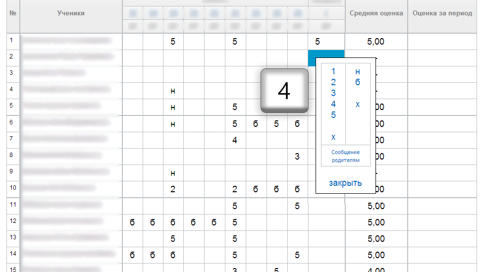

После установки расширения появляется возможность ставить оценки с помощью клавиатуры.
Для начала работы нужно поставить курсор на одну из клеточек журнала. Затем нажмите на клавиатуре цифру, соответствующую оценке. Например, кнопка 5 поставит оценку "5".
После того, как оценка поставится, нажмите на ↓, чтобы спуститься вниз.
Поставим оценку 4 с помощью кнопки 4.
После завершения операции страница будет выглядеть так:
При редактировании вершины с типом "Простая страница" появляется прямая ссылка для редактирования привязанной страницы:
Поиск по страницам:
Сортировка страницы при нажатии на специальную стрелочку в заголовке таблицы:
Также на странице добавления есть кнопка "Добавить пост из ВКонтакте", которая помогает загрузить запись из ВКонтакте по ссылке.
Функционал не будет работать в школьной сети Интернет из-за того, что социальная сеть ВКонтакте там заблокирована.
Передает ли расширение мои данные третьим лицам?
Нет. Расширение не использует сторонние сервера и сервисы для работы. Все данные обрабатываются в браузере и никуда не отправляются. Вы можете убедиться в этом сами - исходный код открыт для всех.
Нашли ошибку? Есть предложения?
Пишите ваши предложения нам на почту support@clienddev.ru.
Умеете программировать и хотите добавить функцию?
Добро пожаловать в наш Github репозиторий. Перед тем, как выполнять коммиты, прочитайте специальную инструкцию.
Что будет в будущих версиях?
Здесь есть список некоторых функций, которые будут добавлены в будущих версиях. Если Вы хотите предложить что-то свое, пишите нам на почту support@clienddev.ru.
Расширение мешает в работе. Как его удалить?
После этого расширения удаляется полностью.